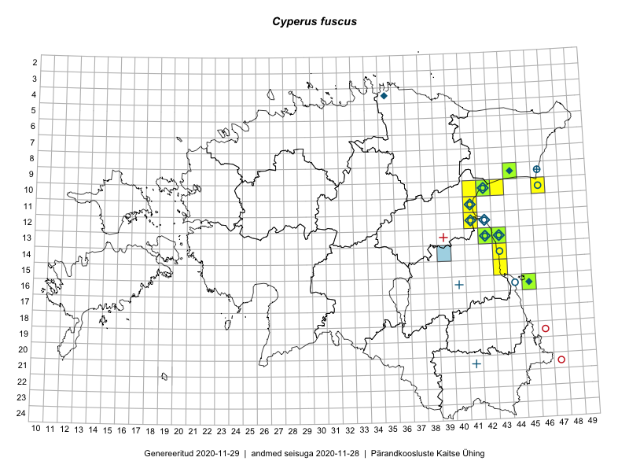

Cyperus fuscus
Uuendatud: 2016-12-07
Kaardile koondatud taksonid: Cyperus fuscus L.

Kaart põhineb 17 vaatlusel. Taime on leitud 6 ruudust.
| Ruut | Vaatleja(d) | Vaatlusaeg | Kirje tüüp | Viide andmebaasikirjele |
|---|---|---|---|---|
| 16-45 | Toomas Kukk, Eerik Leibak | 2015-07-29 | ruut/ala | vaata PlutoFis |
| 16-45 | Toomas Kukk, Eerik Leibak | 2015-07-29 | punkt | vaata PlutoFis |
| 11-41 | Peedu Saar | 2015-08-22 | punkt | vaata PlutoFis |
| 11-41 | Peedu Saar | 2015-08-22 | punkt | vaata PlutoFis |
| 11-41 | Peedu Saar | 2015-08-22 | punkt | vaata PlutoFis |
| 11-41 | Peedu Saar | 2015-08-22 | punkt | vaata PlutoFis |
| 11-41 | Peedu Saar | 2015-08-22 | ruut/ala | vaata PlutoFis |
| 13-42 | Thea Kull, Meeli Mesipuu | 2015-08-14 | punkt | vaata PlutoFis |
| 13-43 | Thea Kull, Meeli Mesipuu | 2015-08-14 | punkt | vaata PlutoFis |
| 13-43 | Meeli Mesipuu, Thea Kull | 2014-08-14 | ruut/ala | vaata PlutoFis |
| 13-42 | Meeli Mesipuu, Thea Kull | 2015-08-14 | ruut/ala | vaata PlutoFis |
| 13-43 | Meeli Mesipuu, Thea Kull | 2015-08-14 | punkt | vaata PlutoFis |
| 10-41 | Ott Luuk, Eerik Leibak | 2016-08-04 | ruut/ala | vaata PlutoFis |
| 10-42 | Ott Luuk, Eerik Leibak | 2016-08-04 | ruut/ala | vaata PlutoFis |
| 10-42 | Ott Luuk, Eerik Leibak | 2016-08-04 | punkt | vaata PlutoFis |
| 10-42 | Ott Luuk, Eerik Leibak | 2016-08-04 | punkt | vaata PlutoFis |
| 10-41 | Ott Luuk, Eerik Leibak | 2016-08-04 | punkt | vaata PlutoFis |